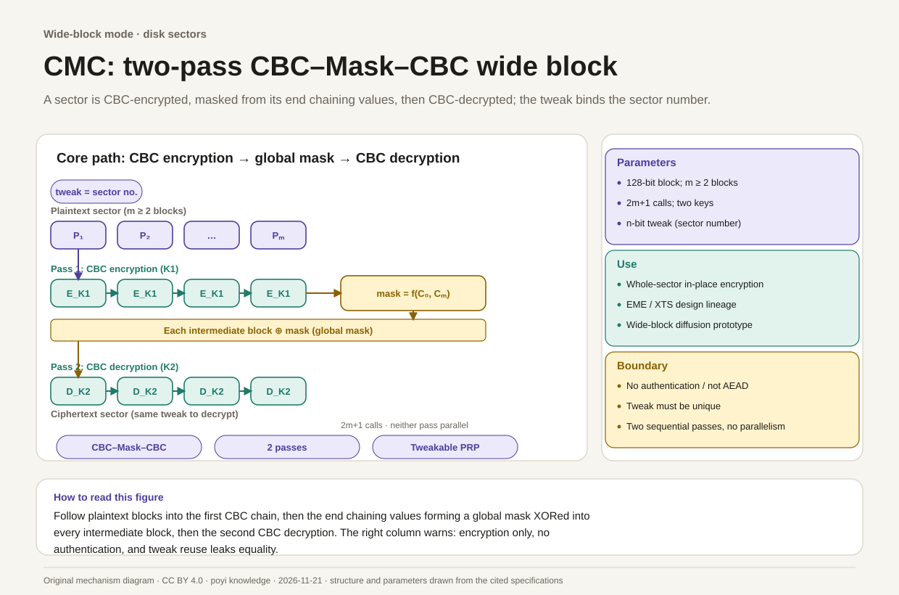
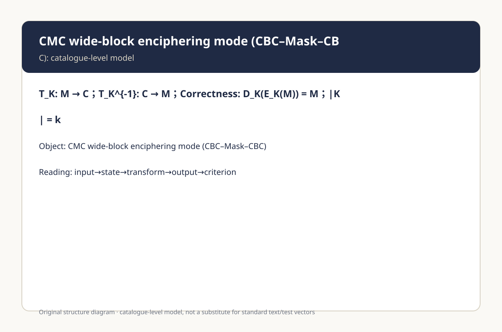

Principles
Algorithm: CMC wide-block enciphering mode (CBC–Mask–CBC) (CMC 宽块加密模式（CBC–Mask–CBC）). ### CBC–Mask–CBC
CMC turns an n-bit block cipher into a tweakable enciphering scheme on mn-bit strings (m≥2). Encryption makes one CBC-encryption pass, derives a mask from the chaining values, XORs the mask into every intermediate block, then makes one CBC-decryption pass. Decryption mirrors it: CBC-encrypt, XOR the same mask, CBC-decrypt. The name is literally CBC–Mask–CBC. ### Two passes, 2m+1 calls, two keys
CMC is a sequential two-pass construction: neither CBC pass is parallel, and an m-block sector costs 2m+1 block-cipher calls. It uses two keys K1 and K2, one per pass; the tweak (usually a sector number) feeds the first-block IV and the mask derivation, so the same plaintext in different sectors yields different ciphertext. Its target is a tweakable strong PRP: under a strong-PRP assumption the ciphertext is indistinguishable and non-malleable.

Why it matters
Disks read and write sectors, commonly 512 bytes. With per-block ECB, an attacker can reorder, replace or replay blocks. CMC treats the whole sector as one wide block; any block change diffuses across the sector, and only the same sector number plus the same plaintext reproduces the same ciphertext. It needs no universal hash and adds no extra primitive, which suits in-place encryption.
CMC gets diffusion from the CBC chains and a global mask without EME's mixing layer. The price is two sequential passes, so blocks inside a sector cannot be parallelized. It uses two keys, adding key-schedule material compared with single-key modes; in return the proof targets a tweakable strong PRP rather than a weak PRP.
Applications
CMC was introduced in a 2003 CRYPTO paper. Halevi–Rogaway then built EME, which parallelizes the two passes while keeping 2m+1 block-cipher calls. Disk encryption standardization ultimately chose XTS (IEEE 1619); CMC and EME survive more as design lineage and teaching comparisons. None of them is AEAD.
CMC fits storage-encryption prototypes where a whole segment must diffuse together and two-pass latency is acceptable; it does not fit protocols needing random access, parallel throughput or authentication. Before putting it in a real system, verify sector size, tweak uniqueness and key management rather than comparing round counts alone.
A shared name may belong to an algorithm, standard, event, person or term; this entry is responsible only for its catalogue binding and does not absorb adjacent records. If versions, regions or institutions define the name differently, the differences stay side by side.

Limits & attacks
CMC provides confidentiality only; it produces no authentication tag. An attacker who flips a ciphertext block turns the decryption into another seemingly random plaintext, and the receiver cannot tell. The tweak must be unique: encrypting the same plaintext under the same tweak reproduces the same ciphertext and leaks equality. The sequential two-pass structure adds latency, and m=1 is outside the domain.
CMC requires m≥2 and cannot encrypt a single block directly. The decryptor must validate the block count, or an incomplete sector enters the wrong path. The tweak is n bits; when the sector number exceeds that range, change the key or the encoding. It resists neither traffic analysis nor access-pattern leakage.
History
Halevi and Rogaway published “A Tweakable Enciphering Mode” at CRYPTO 2003, defining CMC and proving it a tweakable strong PRP. The 2004 EME paper used CMC as the sequential baseline and proposed a parallel alternative. Disk-encryption standardization then moved to XTS; CMC never became a mainstream deployed mode, but its “wide block + tweak” idea influenced later designs.
CMC is not “ciphertext MAC” and provides no MAC; it stands for CBC–Mask–CBC. Confusing it with CCM (CBC-MAC + CTR) turns “encryption only” into “authenticated encryption”, one of the most dangerous mistakes in mode selection.
Worked example & verification
Formal model and reproduction steps
[C=E_K(P;r),\qquad P=D_K(C)]
CMC wide-block enciphering mode (CBC–Mask–CBC): the registered public parameters, key material or randomness, and message are mapped through the stated transformation to an output checked against the registered criterion. The worked example is a structural reproduction, not a new test vector; parameter ranges, standard versions and implementation details remain source-bound.
References
- Wikipedia search entry for CMC 宽块加密模式（CBC–Mask–CBC）. https://zh.wikipedia.org/w/index.php?search=CMC%20%E5%AE%BD%E5%9D%97%E5%8A%A0%E5%AF%86%E6%A8%A1%E5%BC%8F%EF%BC%88CBC%E2%80%93Mask%E2%80%93CBC%EF%BC%89
- Handbook of Applied Cryptography (Menezes, van Oorschot, Vanstone). https://www.cacr.math.uwaterloo.ca/hac/